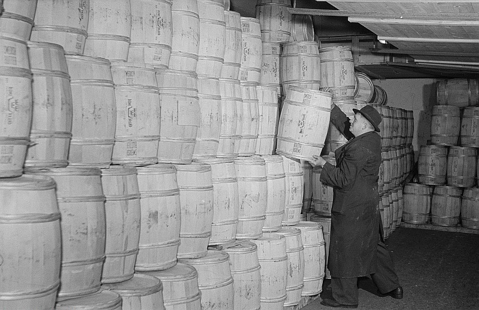

Demand Basics
The foundation of economic analysis: understanding how prices emerge from the interaction of buyers and sellers, and why policymakers need these tools to evaluate policy interventions.
- Explain the Law of Demand and understand why the demand curve slopes downward
- Construct a demand curve from a demand equation, including inverting the equation for graphing
- Build a demand schedule from a linear demand equation
- Apply demand analysis to understand real-world policy through a concrete market example
Introduction
This module introduces demand, the buyer side of the supply-and-demand framework. This analytical foundation will be illustrated by examples across the modules from the European Union’s Common Agricultural Policy (the EU’s CAP).
Economics is fundamentally a framework for understanding choices and their consequences. When a government implements a policy—whether it is setting a minimum wage, imposing a tariff, or subsidizing an industry—the policy operates through supply and demand mechanisms. To predict and evaluate the effects of policy, you must understand how buyers and sellers respond to incentives, and how prices coordinate their actions.
Each section combines reading material, interactive demonstrations, and self-check opportunities. We will use the European sugar market as our primary worked example throughout, building your understanding step by step. By the end of this module, you will be able to read, calculate, and graph the demand side of the CAP sugar example.
Policy Connection: Understanding Demand and Supply through CAP
What's Under the CAP?
Economics provides a framework for thinking about the impact of decisions and market forces on complex policy scenarios. Throughout these modules, we will use the European Union's Common Agricultural Policy (CAP) as a running example to connect foundational economics to real-world policy. The CAP offers an excellent case study because it illustrates how government intervention, even when well-intentioned, can create unintended economic consequences that supply-and-demand analysis helps us understand.
The EU Common Agricultural Policy: Origins and Structure
The Common Agricultural Policy, established in 1962, is one of the oldest and most significant policy interventions in modern markets. The EU created the CAP to address what policymakers saw as critical concerns: ensuring a stable food supply for Europe's consumers and guaranteeing decent living standards for the continent's farmers.1 In the decades after World War II, food security was a genuine policy priority, and agriculture represented a much larger share of employment and output than it does today.
The original CAP operated through a system of price supports: the government would set a guaranteed minimum price for various agricultural products. If the market price fell below this guaranteed price, the government would step in and purchase the unsold surplus at the guaranteed price, storing it or sometimes disposing of it. This policy succeeded in boosting farm incomes and agricultural output—perhaps too well. Over time, the guaranteed prices created powerful incentives for farmers to expand production far beyond what the market demanded at any reasonable price. The result was massive, persistent surpluses.
By the 1980s and 1990s, the oversupply had reached absurd proportions. Europe accumulated what the press nicknamed "Butter Mountains"—enormous stockpiles of stored butter—and "Wine Lakes"—vast quantities of unsellable wine. Beginning in the 1990s, the CAP underwent significant reforms, shifting toward direct payments to farmers that are partially decoupled from production. However, the original CAP structure with price supports provides an excellent lens for understanding how markets work—which is exactly what we will develop in this module.

{kind=link}
When you understand demand and supply, you can predict that price supports above equilibrium will create surpluses. By the end of Module 3, you will be able to calculate exactly how large those surpluses were; by Module 6, you will connect that surplus to fiscal cost for EU taxpayers and explain why the policy had to change. These tools are the foundation for the rest of the sequence and for policy analysis more broadly.
Understanding Demand
The Law of Demand
Economists use the term "demand" to describe the relationship between price and the quantity that consumers are willing and able to purchase. This relationship is based on needs, wants, and the ability to pay. When the price of a product increases, consumers typically respond by purchasing less of it—a phenomenon we see everywhere, from gasoline prices to concert tickets to smartphone models. When the price falls, they purchase more.
The law of demand reflects rational economic behavior: consumers face trade-offs. When sugar becomes more expensive, households might consume less, switch to artificial sweeteners, or purchase fewer sugary products overall. Bakeries and beverage manufacturers might reduce their use of sugar or develop alternative recipes. Some potential customers may be priced out of the market entirely. Conversely, when sugar becomes cheaper, all these decisions reverse—consumers purchase more.
That CAP connection matters immediately: if policy keeps the sugar price above the market-clearing level, this demand relationship tells us that buyers will purchase less sugar, not more.
A demand schedule is a table showing the quantity demanded at various price levels. We create the schedule by using a demand equation to calculate price-quantity pairs. When we plot those pairs, we graph the demand curve. By convention in economics, we place quantity on the horizontal axis (x-axis) and price on the vertical axis (y-axis). This convention—which is opposite to typical mathematical practice where the independent variable goes on the x-axis—has historical roots and is universal in economics. The resulting downward-sloping curve illustrates the law of demand visually.
Two Ways to Graph the Same Demand Relationship
The economics convention graphs the inverted demand equation, \(P = 5 - (1/10)Q_D\), with price on the vertical axis. The mathematical convention graphs the demand equation, \(Q_D = 50 - 10P\), with price on the horizontal axis. Because the axes are reversed, the same relationship looks flatter in inverse form and steeper in standard form.
Read up from a quantity to find the price on the demand curve.
Read across from a price to find the quantity demanded.
The law of demand is the same in both pictures: a higher price is associated with a lower quantity demanded. The visual slope changes because the axes are reversed: the inverse demand equation has slope \(-1/b\), while the standard demand equation has slope \(-b\).
An important concept underlying demand is willingness to pay: the monetary value each consumer places on a market good. At high prices, only consumers with high willingness to pay will buy, implying a low quantity demanded. At lower prices, consumers with lower willingness to pay will also buy, implying a high quantity demanded. Willingness to pay helps explain why the law of demand holds: as price decreases and the good becomes more affordable, more consumers are willing to buy, increasing quantity demanded.
Demand Equations: Reading the Math
Linear demand equations are compact, but every term has an economic meaning. A standard linear demand relationship is written:
Quantity demanded equals the maximum quantity demanded at a zero price, minus the quantity buyers drop as price rises.
The quantity demanded at a particular price. On the graph, this is read on the horizontal axis.
The quantity demanded if the price were zero. It anchors the demand curve on the quantity axis.
How many units quantity demanded falls when price rises by one unit. Larger values mean buyers reduce quantity more sharply.
The price buyers face. In economics graphs, price is placed on the vertical axis.
The minus sign captures the inverse relationship. It turns a higher price into a lower quantity demanded, which is exactly the law of demand.
Building a Demand Schedule: The EU Sugar Market
Let's work with a concrete example that will anchor our understanding throughout this module. Imagine the demand for sugar in the European Union during a particular year. Suppose economists have estimated the demand function:
\(Q_D = 50 - 10P\)
Where \(Q_D\) is measured in millions of kilograms per year, and \(P\) is the price in euros per kilogram. Note: this is a stylized illustration — the numbers are chosen to keep the algebra clean, not to match actual EU market volumes or intervention prices.
If sugar were free, buyers would demand 50 million kg. For every €1 increase in price, buyers reduce quantity demanded by 10 million kg.
We can build a demand schedule by plugging in different prices:
| Price (€/kg) | Quantity Demanded (millions of kg/year) |
|---|---|
| 0 | 50 − 10(0) = 50 |
| 1 | 50 − 10(1) = 40 |
| 2 | 50 − 10(2) = 30 |
| 3 | 50 − 10(3) = 20 |
| 4 | 50 − 10(4) = 10 |
| 5 | 50 − 10(5) = 0 |
Notice the pattern: each time price increases by €1 per kg, quantity demanded falls by 10 million kilograms. At a price of €5/kg, quantity demanded reaches zero — no consumer is willing to buy sugar at that price.
The table is not just arithmetic practice. It shows the law of demand in a concrete pattern: every €1 increase in price reduces quantity demanded by 10 million kilograms. That regular movement is exactly what the slope coefficient captures. Under the CAP price support, this same logic means that a higher supported price reduces the quantity of sugar buyers demand.
"Demand" refers to the entire relationship between price and quantity. "Quantity demanded" refers to a specific amount at a specific price: one point on that curve. When economists say "demand increased" or "demand decreased," they mean the entire relationship between price and quantity demanded has changed. This can be due to changes in other variables that were held constant (income, preferences, prices of related goods). In sum, when price changes and consumers respond by buying more or less, quantity demanded changes but demand itself does not. This distinction becomes crucial in Module 2.
Take time to generate your own response. Then show the answer to compare it with yours.
From Equation to Graph: Inverting the Demand Equation
To graph the demand curve, we need to invert the demand equation so that price (P) is expressed in terms of quantity (\(Q_D\)). This is necessary because we place price on the vertical axis. Let's work through the algebra step by step.
- Start with the given demand equation, with \(Q_D\) expressed in terms of \(P\): \(Q_D = a - bP\).
- Add the term containing price \(P\) to both sides of the equation: \(Q_D + bP = a\).
- Subtract \(Q_D\) from both sides: \(bP = a - Q_D\).
- Divide both sides by the term accompanying \(P\), \(b\): \(P = a/b - Q_D/b\).
The inverted form is \(P = 5 - (1/10)Q_D\). Two features tell us how to draw the line:
| Feature | Value | How to read it |
|---|---|---|
| Vertical intercept | \(P = 5\) | When \(Q_D = 0\), the curve crosses the price axis at €5/kg: the price at which quantity demanded is zero. |
| Slope | \(-1/10\) | For every 10-million-kg increase in quantity, price falls by €1. |
Inverting the equation does not change the economics. It is the same demand relationship, rewritten so it fits the standard economics graph with quantity on the horizontal axis and price on the vertical axis. This is why the module spends time on inversion: it is the bridge between algebra and the graph.
Step-by-Step: Graphing the Demand Curve
With the inverted equation \(P = 5 - (1/10)Q_D\), we have several methods to graph the demand curve:
Two Intercepts
Plot the vertical intercept (0, 5) and the horizontal intercept (50, 0), then connect with a straight line.
Slope and a Point
We need one known point to anchor the line and the slope to extend it. The vertical intercept is the easiest known point — it comes straight from the inverted equation when you set \(Q_D = 0\). Start there: (0, 5). Then apply the slope repeatedly: −1/10 means move right 10 units, down 1 unit. Each step traces out another point on the line; repeat until you reach the horizontal axis.
Plot the Demand Schedule
Each row of the demand schedule is a point. Plot all six price-quantity pairs, including the zero-price row, then connect with a straight line.
| Price (€/kg) | Qty (mil. kg) |
|---|---|
| 0 | 50 |
| 1 | 40 |
| 2 | 30 |
| 3 | 20 |
| 4 | 10 |
| 5 | 0 |
Notice that Methods 1, 2, and 3 all produce exactly the same demand curve — because there is only one straight line consistent with the equation. The intercept method is fastest when you have the inverted equation. The slope-and-a-point method is useful when you know one coordinate and the slope. The schedule method is a useful check because it turns the equation into price-quantity pairs before plotting them. Choose whichever approach you find clearest; you will use all three at different points in the course.
Because price is plotted on the vertical axis and quantity on the horizontal axis, the slope of the demand curve is the inverse of the slope of the demand function. In our example, the demand function is relatively steep with a slope of 10, indicating that consumers are quite responsive to price changes. Visually, this corresponds to a relatively flat demand curve with a slope of \(1/10\).
Students often mix up the intercepts because the graph uses the economic convention of plotting the inverted demand equation, with \(P\) on the vertical axis and \(Q\) on the horizontal axis. For demand, the price intercept belongs on the vertical axis and the quantity intercept belongs on the horizontal axis. A second common mistake is to say "demand changed" when only price changed; in that case, only quantity demanded changes.
Interactive Practice: Drawing Demand Curves
You have now seen three methods for graphing a demand curve — intercepts, slope-and-a-point, and plotting the schedule. Now it's your turn. Use whichever method feels most natural; all three will produce the same line.
Below are three demand equations to graph. For each, draw the demand curve with price on the vertical axis and quantity on the horizontal. Equations 1 and 2 are already in inverse form. Equation 3 requires inversion first. Click two points on the graph to place your line, then press Submit.
Show inversion steps
Interactive Practice: Exploring Intercept and Slope of Demand Curves
Current demand: \(Q_D = 50 - 10P\)
Graph form: \(P = 5 - (1/10)Q_D\)
The graph starts with values matching our EU sugar example: \(a = 50\), \(b = 10\). Try adjusting the sliders to see how the curve responds. Increasing the intercept \(a\) shifts the demand curve rightward — more quantity demanded at every price. Increasing the slope coefficient \(b\) makes the demand curve flatter in the economics graph, because the slope of the inverted demand equation is \(-1/b\). This implies that a 1-unit price increase now results in a bigger reduction in the quantity demanded.
Take time to generate your own response. Then show the answer to compare it with yours.
(a) Set \(Q_D = 0\): \(0 = 50 - 10P \Rightarrow P = 5\). When price reaches €5/kg, no one buys sugar. This is the vertical intercept — where the demand curve meets the price axis.
(b) Set \(P = 0\): \(Q_D = 50 - 10(0) = 50\). At a price of zero, consumers would demand 50 million kg. This is the horizontal intercept — where the curve meets the quantity axis.
(c) In the inverse form used for economics graphs, price is depicted on the vertical axis and quantity is depicted on the horizontal axis.
You now have the buyer side of the sugar market in hand: how much households and firms want to buy at each price, how to represent that relationship with an equation, and how to graph it. Module 2 adds the producer side of the same market so that, in Module 3, we can bring the two together and locate market equilibrium.